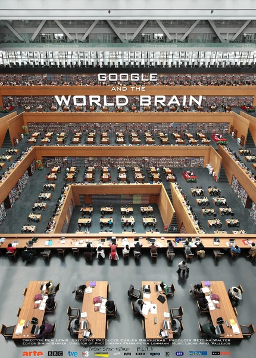

Документальный · 2013 · Документальный, Драма
Фильм Бена Льюиса о том, как Google Books оцифровывает книжное наследие человечества. Ещё Герберт Уэллс мечтал о «всемирном мозге» — единой библиотеке всего знания; сегодня эту идею продолжают строить алгоритмы.
Ben Lewis' documentary about Google Books scanning the whole of human written heritage. Long before the internet H.G. Wells dreamt of a 'world brain' — one universal library of all knowledge; today algorithms are building it.
← Вернуться в каталог IT Movies